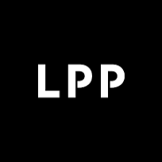

Feb 2024 – Present · Dhaka, Bangladesh
Merchandising Team Leader
LPP S.A. — Bangladesh Liaison Office (DLO)
Reserved · House · Mohito · Cropp · Sinsay
LPP’s Dhaka Liaison Office is the sourcing arm for five brands in Bangladesh. The role runs the supply side of that operation: capacity and allocation across the vendor base, pre-cost analysis and FOB negotiation, production and quality through to shipment, with daily contact between 20+ buyers in Poland and the factories here.
Vendor ManagementCosting & NegotiationCapacity PlanningProduction & QACompliance AuditsSourcing StrategyTeam Leadership
Key responsibilities
- Run order execution end to end for roughly 3 million pieces a year, from pre-cost evaluation and FOB negotiation through allocation, production and shipment.
- Coordinate daily with 20+ Polish buyers and design teams across Reserved, House, Mohito, Cropp and Sinsay.
- Plan factory capacity and production forecasts across the active supplier base, then allocate orders to balance load between brands.
- Lead a four-person merchandising team covering denim, woven bottoms and accessories.
- Spend two days a week on factory floors checking production status, quality and sampling.
- Report weekly to the Poland headquarters on production status, risk and recommended action.
- Identify, assess and onboard new suppliers, from first sample through commercial viability and audit clearance.
Detailed responsibilities
Production management and quality control
- Follow up daily production across supplier factories and troubleshoot issues as they surface.
- Allocate QA resource and oversee IPC, inline and final inspections.
- Visit factories two days a week to monitor production status, quality and sampling.
- Track development samples from request through to buyer decision.
- Review inspection results and give suppliers and buyers clear direction on what happens next.
Buyer coordination and communication
- Work daily with 20+ Polish buyers across the five LPP brands.
- Meet buyers and design teams regularly to align on specification, quality standards and delivery expectations.
- Support buyers in negotiation meetings with suppliers on price, terms and commercial conditions.
- Arrange buyer and supplier meetings where an issue needs resolving or new business is worth exploring.
- Send weekly production updates to the Poland headquarters with status and recommendations.
- Advise on supplier capability, alternative sources and product options.
- Act as the main bridge between the Poland headquarters and the DLO supplier network.
- Propose new suppliers to strategic buyers where they open up business.
Vendor management and sourcing
- Plan factory capacity and build production forecasts across 30+ active suppliers.
- Identify new suppliers, run sample development with them and assess commercial viability.
- Manage audit status across the base, covering ACCORD, BSCI and OEKO-TEX verification.
- Verify prices and evaluate suppliers against both active and alternative sources.
- Follow up vendor bookings with nominated forwarders and guide suppliers on shipment timelines.
- Keep backup suppliers developed for business continuity, and check market prices on an ongoing basis.
- Work to a season-on-season volume growth target for the Dhaka office.
Supplier development and performance
- Coach production merchandisers and quality controllers on supplier management.
- Train suppliers on quality, compliance and process improvement.
- Run orientation programmes at the DLO office for newly onboarded suppliers.
- Grade suppliers and run performance evaluations.
- Give buyers and production managers the performance data behind sourcing decisions.
- Keep order flow continuous and supplier relationships working over the long term.
Trend monitoring and strategic sourcing
- Follow mood boards, inspiration and technical specifications shared by the design teams.
- Brief suppliers on design direction and technical requirements for each season.
- Analyse trends and build supplier proposals to put in front of buyers.
- Engage fabric mills and raw-material suppliers directly.
- Share market intelligence and competitive price analysis with suppliers and buyer teams.
Selected impact
- 97% on-time delivery in the latest season, achieved by tightening capacity monitoring and weekly vendor follow-up.
- Grew the Dhaka Liaison Office’s supplier order volume 10% season-on-season, meeting LPP’s Bangladesh growth target.
- Sourced and onboarded 8 new vendors in 2025–26, alongside vendor-sharing and allocation strategies that balanced capacity across brands.
5 brands20+ Polish buyers35 active vendorsTeam of 4~3M pcs/yrDenim & AccessoriesACCORD · BSCI · OEKO-TEX